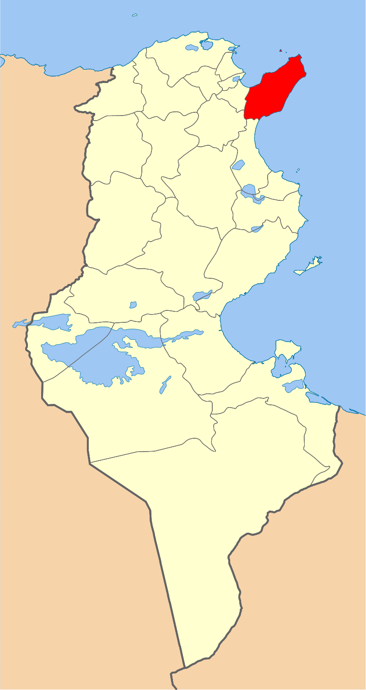
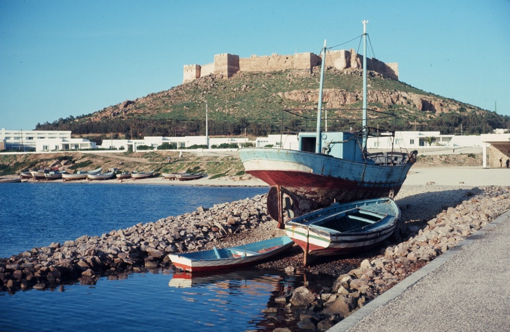
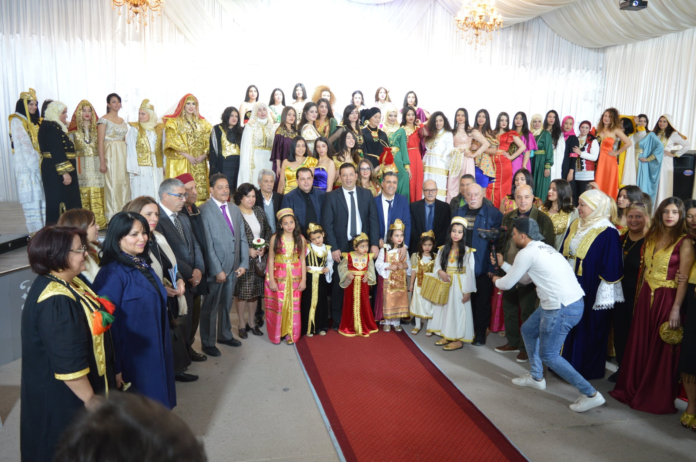
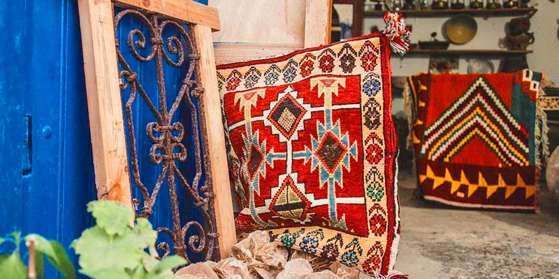
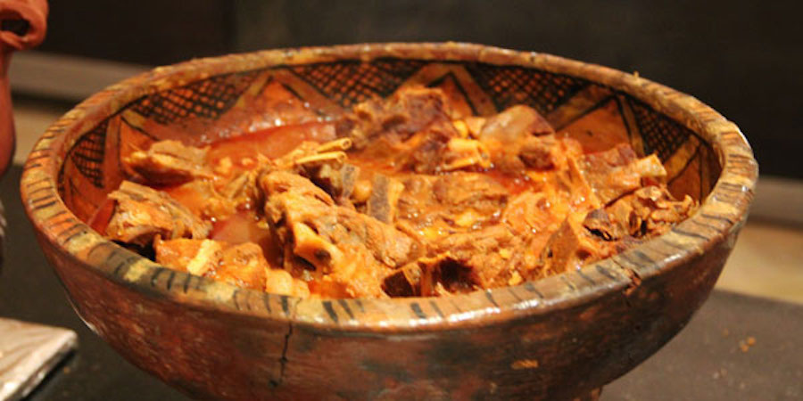
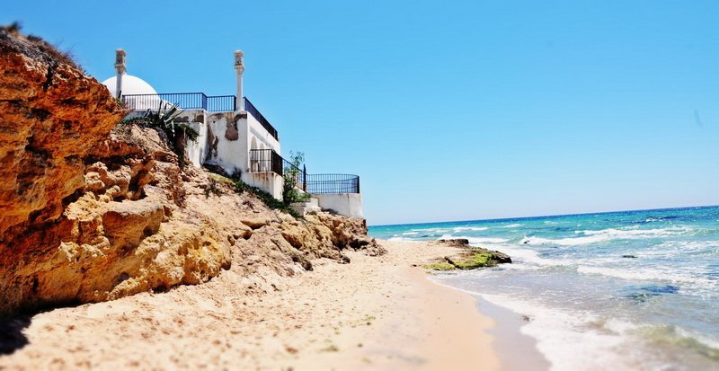

Nabeul
Promontoire pointé vers la Sicile, la région du Cap Bon est un vaste jardin où les orangers et les citronniers brandissent leurs fruits d’or au cœur de l’hiver. Ses plages de sable fin comptent parmi les plus belles de Tunisie. Ville principale du Cap Bon, Nabeul est une ville d’artisanat réputée pour sa poterie, ses nattes de jonc et ses essences de fleurs. Le port de pêche de Kélibia, les sources chaudes de Korbous, les fauconniers d’El Haouaria sont quelques-unes des curiosités de cette région.
La médina de Nabeul
Le fort de Kélibia
Site archéologique de Néapolis
Le stade Nabeulien
Quelques chiffres
Superficie
4 822 km2
Nombre de maisons
11 102
Habitants
787 920
Localisation
Située dans la région du cap Bon, qui constitue une péninsule s'enfonçant dans la mer Méditerranée, Nabeul est située au centre de son flanc sud-est, non loin de la ville d'Hammamet, et constitue l'une des plus importantes localités qui se succèdent le long de la côte du golfe d'Hammamet. Son environnement est constitué de vergers et de jardins. Grâce à sa plage de sable fin et son climat méditerranéen, la région est une destination appréciée des touristes européens et représente le second pôle touristique de la région après Hammamet.

Histoire
Dans l'Antiquité gréco-romaine, la ville portait le nom de Néapolis, la « ville neuve », dont dérive son nom actuel de Nabeul. Elle devint ensuite un comptoir carthaginois. La région du cap Bon est l'un des centres de l'activité artisanale en Tunisie. Cet art a connu un grand développement après l’indépendance et surtout avec la croissance de l’industrie touristique2. Diverses techniques ont été transmises à Nabeul par les Français, comme la poterie, tandis que les carreaux de céramique sont plutôt hérités de l’Espagne, les poupées de sucre viennent d’une tradition sicilienne, etc. Cela n’empêche pas que ces activités ont été fortement développées grâce à la créativité et au sens artistique des artisans nabeuliens à travers les décennies3.

Culture

hover me
hover me
hover me
hover me